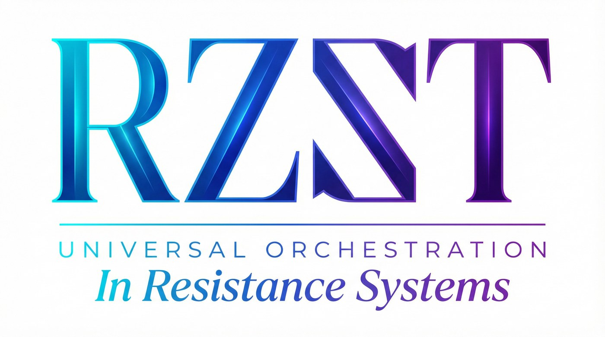

RZST: Domain-Agnostic Multi-Agent Orchestration
"We propose a system where multiple computer programs work together like a good team of ranch dogs to sort out tough problems."
A simulated blueprint engineered to become the answer to solving the world's most complex distributed data bottlenecks.
The RZST Engine: Stateful Orchestration & Governed Autonomy
Strip away the poetry and the hype. The RZST “Engine” is just complex math, lots of data routing, and systems engineering. Capable of finding theoretical blueprints to fix very real problems.
"The computers are engineered to do the heavy lifting, but a real human keeps a hand on the reins so the machine doesn't spook and run off."
RZST operates as an agile orchestration layer utilizing advanced, stateful multi-agent frameworks to model complex, long-horizon workflows, reducing human bottlenecks.
However, unconstrained AI suffers from trajectory drift and hallucination. To bridge the gap between generative artificial intelligence and future physical execution, our architecture enforces "Governed Autonomy".
We propose rigorous Human-in-the-Loop (HITL) checkpoints and utilize processes mirroring Directed Acyclic Graph (DAG) logic to ensure that our simulated autonomous agents operate strictly within defined mathematical, ethical, and physical constraints.
Current Initiatives & Academic Proposals
Infinite Scalability: Beyond the Biological Substrate
While the RZST system proposes immediate flagship deployments focusing on synthesizing high-fidelity digital twins for clinical trials, the RZST multi-agent architecture is inherently domain-agnostic. Any industry reliant on multi-scale modeling, decentralized physical execution, or complex causal inference can integrate our orchestration frameworks.
From optimizing Decentralization of data to orchestrating automated, distributed results—and extending further into energy systems, climate remediation, and planetary-scale infrastructure—RZST's Domain-Agnostic Multi-Agent system provides the computational scaffolding for the next era of governed, automated innovation.
The Architectural Blueprint is Ready.
Whether you are an enterprise seeking privacy-preserving data interoperability, a principal investigator requiring computational validation, or an organization ready to apply the next generation of AI Methods Production to your agents—integrate with the architecture.
Contact Partnerships